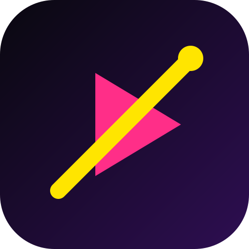

CortaLive ProObrigado pela compra! Vamos instalar.
São 3 passos e leva poucos minutos. Guarde o e-mail da compra: ele tem o código que você vai usar na ativação.
1Baixe o instalador
Windows 10 ou 11 (64 bits). O arquivo tem cerca de 150 MB.
Baixar o CortaLive Pro2Instale
- Abra o arquivo baixado. Se o Windows mostrar "O Windows protegeu o computador", clique em Mais informações → Executar assim mesmo (acontece com programas novos).
- Deixe marcadas as opções Ligar junto com o Windows e Instalar o FFmpeg.
- No final, deixe marcado Abrir o CortaLive Pro agora.
3Ative
Na tela Ativação, digite o e-mail usado na compra e o código da compra (está no e-mail de confirmação da Cakto) e clique em Ativar agora. A licença vale para até 2 computadores.
Depois siga o checklist Primeiros passos do painel: escolher a IA, os canais e conectar suas contas.
Precisa de ajuda?
O manual completo está dentro do programa (aba Ajuda). Para suporte, responda ao e-mail da compra.
Voltar para a página do CortaLive